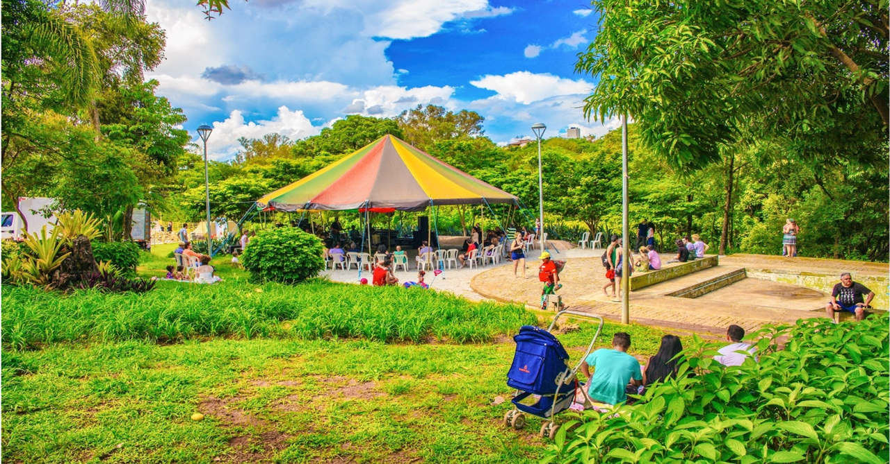
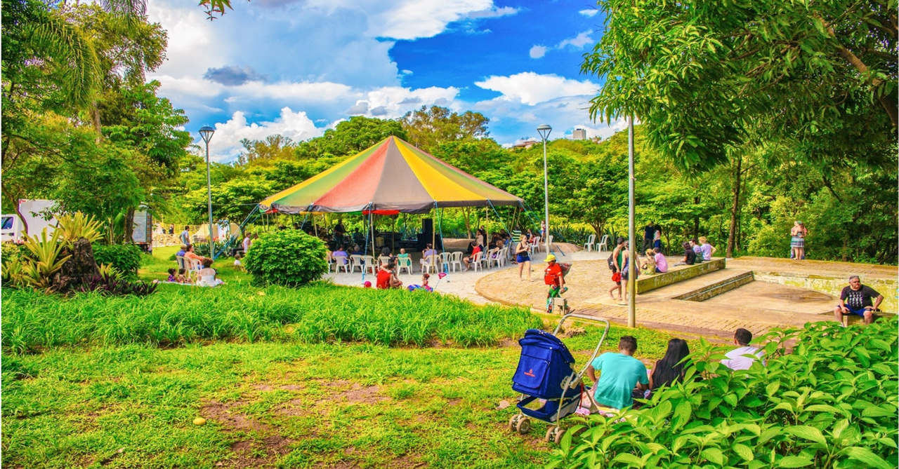

Sobre Parque lago do Nado
Localizado na região norte de Belo Horizonte, entre os bairros Planalto e Itapuã, o Parque Municipal Fazenda Lagoa do Nado possui uma área de aproximadamente 311 mil metros quadrados e foi implantado em 1994. Com uma infraestrutura composta por biblioteca, sala multimeios, teatro de bolso, teatro de arena, quadras poliesportivas, pista se skate, campo de futebol, pista para caminhadas e viveiro de mudas, o parque realiza diversas atividades de educação ambiental, cultura e esporte com o apoio da Fundação Municipal de Cultura e da Secretaria Municipal de Esportes.
O BioParque do Rio está na Quinta da Boa Vista, no coração de São Cristóvão, também conhecido como Bairro Imperial. Local da antiga residência da família real, hoje a Quinta da Boa Vista reúne história, natureza, cultura e lazer, além de ser um dos maiores parques urbanos do Rio de Janeiro, com cerca de 155 mil metros quadrados.
Sua vegetação é composta por espécies do Cerrado e por uma Mata Ciliar que circunda uma lagoa de 22 mil metros quadrados, formada pelo represamento de três nascentes. O córrego do Nado é um afluente do córrego Vilarinho, que deságua no ribeirão do Onça, unindo-se ao rio das Velhas, integrante da bacia do rio São Francisco.
Pesquisadores da UFMG identificaram no local cerca de 130 espécies de árvores, sendo 75% nativas, com destaque para o ipê, aroeira branca, urucum, jatobá, barbatimão, quaresmeira e goiaba brava.
Dentre os animais de sua fauna pode-se citar aves, como pica-pau, biguá, coruja, frango d’água, anu, alma de gato, trinca ferro e mamíferos, como mico-estrela, gambá, esquilo-caxinguelê, tatu, morcego, além de lagartos, cágados, anfíbios e peixes.
No final do século XIX, uma intensa movimentação de tropeiros e mercadores originários da Bahia e do Norte de Minas utilizavam o distrito de Venda Nova como entreposto comercial em suas rotas rumo ao Curral Del Rey, Sabará e Rio de Janeiro. Aproveitando a parada, descansavam, lavavam suas roupas e banhavam-se às margens de um riacho de águas límpidas da redondeza. A ele deram o nome de córrego do Nado.
Fotos
 
